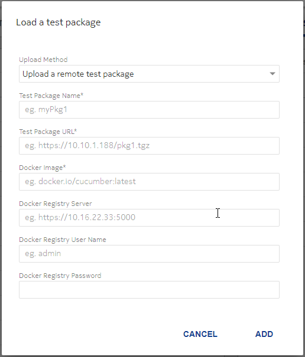

The following procedure describes how to load a test package in the CCTF UI.
A Load a test package pop-up window opens:
Mandatory fields (when uploading a remote test package):
Optional fields (when uploading a remote test package):
DevOps Guide • P556766-DN1000055058-R23.8 • 1 • Cover • ©2023 Nokia. Nokia Confidential Information • Use subject to agreed restrictions on disclosure and use.